Open source, at the scale it actually exists – INTA 4803/8803, 2 September 2026
← → build/slide · ↑ ↓ day · B builds off · O overview · N notes · F present
Open source, at the scale it actually exists
Building an instrument for a literature you cannot read · and being honest about what it misses
ClassINTA 4803 / 8803 · Open Source Intelligence
GuestStephan De Spiegeleire · HCSS
You readthe red-lines paper · this hour is the machinery behind it
Bringa laptop, and a topic you actually care about
log in now · GT-RuBase you will need it in ten minutes
Flashback in time
RAND/UCLA Center for Soviet Studies, 1990–91.
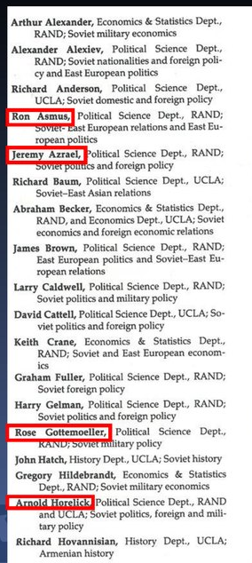
About two hundred names
RAND and UCLA together fielded roughly two hundred Soviet specialists, listed here by department and by subject. You are not meant to read this page – its length is the argument. Six entries are boxed in red because the room already knows the names.
A standing seminar, not a mailing list
Alex Alexiev, Abraham S. Becker, Robert Nurick and Eugene Rumer on one panel. Co-location was the technology: two hundred people who argued with each other every week, rather than two hundred people who happened to share a subject.
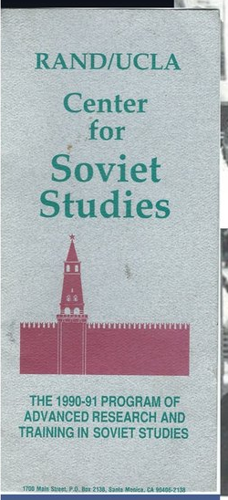
An infrastructure, not a project
The 1990–91 program of advanced research and training in Soviet studies. RAND/UCLA, with a couple of comparable programs, was the only serious attempt to build a research infrastructure – not a grant and not a project – so that the United States could understand a peer competitor profoundly unlike itself.
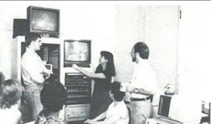
Overwhelmingly human technology
The Soviet TV monitoring facility was the most advanced equipment the center had, and all it did was put Soviet broadcast output on a screen. Everything downstream of those screens was a person watching it, reading around it and writing it up.
A teaching layer, too
Hans Rogger and a very young Stephan De Spiegeleire. Students were trained inside the research rather than beside it: they read the huge, mostly textual Soviet record themselves, and carried up what mattered.
The six boxed in red, as the roster printed them
Ron AsmusPolitical Science Dept., RAND; Soviet-East European relations and East European politics
Jeremy AzraelPolitical Science Dept., RAND; Soviet politics and foreign policy
Rose GottemoellerPolitical Science Dept., RAND; Soviet military policy
Arnold HorelickPolitical Science Dept., RAND and UCLA; Soviet politics, foreign and military policy
Robert NurickPolitical Science Dept., RAND; Soviet foreign and military policy
Eugene RumerPolitical Science Dept., RAND; Soviet foreign and military policy
Six of the two hundred
These are their entries exactly as the 1990–91 roster set them – one department and one subject each. Every one of them went on to a career at the center of US policy toward Russia, or of the argument about it.
Not that the old way was primitive
They did the homework with what they had. The technology was people, a library and a weekly seminar – and it was organized, funded and staffed as an infrastructure, which is the part that has not been replaced.
Russia is back. We are not.
The competitor came back. The expertise did not.
Russia came back
This is the image the 2010s attached to Russian power, and it traveled because it caught a posture: strength as performance. Behind the meme, the state re-entered the field as a first-order competitor.
“It’s not just pounding your fists and making loud statements. I believe that strength has several dimensions: first, a person must be convinced of the truth in what he is doing, and secondly, he must be ready to go all the way to achieve the goals that he set.”
Vladimir Putin
Read it out loud
Putin’s own account of what strength is. Notice what is not in it: nothing about fists or loud statements, and everything about conviction and about being ready to go all the way. That is a claim about will, and it is the one the West kept discounting.
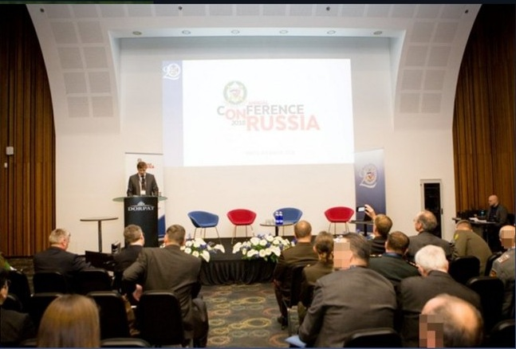
Nobody rebuilt the analytical layer
A conference on Russia today: an auditorium, a program, two days. That is what replaced a center of two hundred specialists with a library and a standing seminar. Governments stopped paying for the infrastructure.
1991The Soviet Union dissolves. The centers close, the money stops and the specialists scatter into other subjects.
1990sGovernments stop paying for standing area expertise. Think tanks, newspapers and the market are assumed to cover it.
2007Munich. Putin says out loud that Russia will not accept the Western order as given.
2014Crimea. The escalation arrives at an analytical layer that is already thin on both sides of the Atlantic.
2022The full-scale invasion. The competitor is back at full size, and nobody has rebuilt the infrastructure.
Thirty years of divergence
The competitor rebuilt itself in public and on a schedule. The expertise did not: it dispersed in the 1990s and was never reassembled, so each escalation met a thinner analytical layer than the one before it.
The turn this week answers
The competitor came back. The expertise did not. The rest of the week is about doing the homework anyway – with fewer people, less time, and instruments the 1990 center never had.
What this has actually produced
Four projects, one method – the one you will use on your own question. On a single axis, so the sizes are comparable rather than impressive.
WACKO
Official Russian documents set against the semantic echoes of more than a thousand Russian philosopher books. The question is not what a doctrine says, it is which older argument it is repeating.
Red Lines
Sixty-three years of declared Soviet and Russian thresholds, coded and placed against Western moves. The finding is a null one and is reported as such: they do not – yet – track Western provocations, or the reverse.
Gray Horizon
A taxonomy of below-threshold conflict: 1,400 taxa across thirteen dimensions that vary independently of one another. On the shared axis it sits beside WACKO, nearly three orders of magnitude below what comes next.
Regeneration
More than a million taxonomically annotated text chunks in one corpus. The same pipeline as the other three, run at a scale where you can no longer check it by reading – which is why Thursday is spent on reliability.
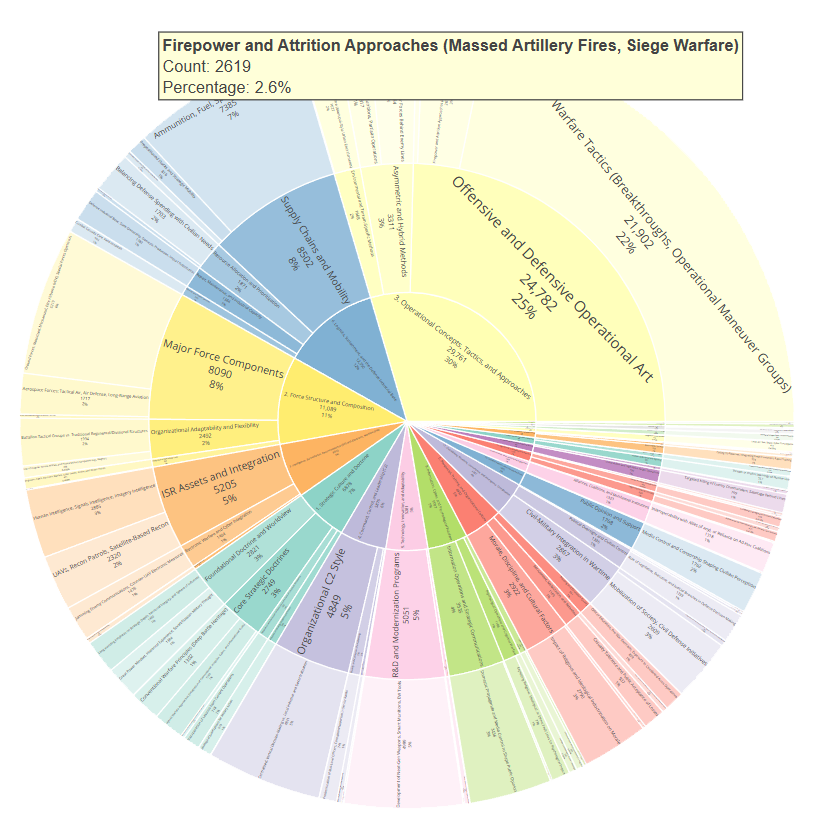
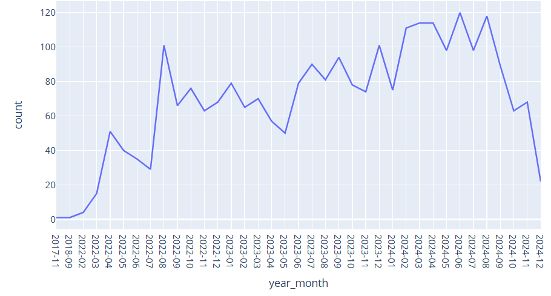
What all four end in
The same object every time: a corpus you can read through its own taxonomy, one arc per taxon carrying its own count, and any single taxon reopened as a time series. Both panels are our own dashboards, on the military-affairs corpus – the shape is what the method produces, whatever the subject.
The scholarly record on your topic
How many publications do you think already exist on your own research topic?
?
Pick a number
Before anything else appears: how many publications do you think already exist on your own topic, in the databases you already know? Hold that number.
What people guess
Web of Science and Scopus, searched the way most of us were trained to search them, hand back a few hundred publications on a topic. That number feels like the field, so it becomes the answer.
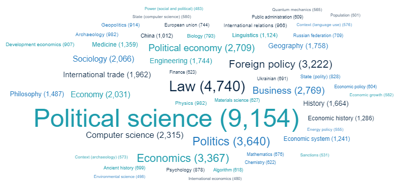
One topic, broken out by field
This is the field-of-study breakdown of a single working corpus, straight off the dashboard. It is not a reading list of a hundred titles – it is tens of thousands of publications spread across several dozen disciplines.
1,000 to 150,000 per topic
Political science alone carries 9,154 publications here, law 4,740, foreign policy 3,222. Laid on a logarithmic axis, the few hundred you started from is one tick, near the left-hand end.
Which is the problem
This is an assumption, not a database query – two papers a day, every working day, for a year, comes to roughly 700. That is the same order as the opening guess, and two decades of reading short of even the smallest end of the real record. Not a little beyond human capacity. Far beyond it.
How search is typically done today
Solitary, poor, nasty, brutish, and short.
In 99.9% of cases it is not explicit
And it is not documented. Every link in that chain is missing: why those sources and not others? which excerpt exactly? complete citation? alternative readings? A reader cannot check any of it, and neither, six months later, can you.
What we lean on instead
Presumably authoritative sources – peer-reviewed, most-cited. Trust me, I know the literature. And herd behavior: the same handful of works get cited because they were cited, which measures circulation, not fit to your question.
The alternatives that already exist
None of this is a tooling problem. Bibliometric databases – Scopus, Web of Science, Lens – already return a source set you can write down, hand over, and have someone else rerun. And, cheating, so does syllabus site:.edu, which gets you what the people who teach the subject actually assign.
Precision and recall
Two numbers. Almost everyone optimises the one they can see.
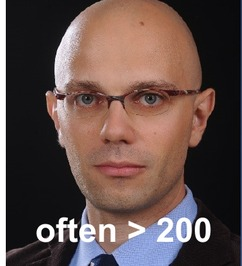
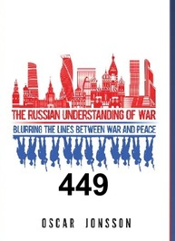
The frame
Everything your field could have found on your question. Not what is in your library, not what is in your database – everything that exists. Both numbers are measured against this, which is already the uncomfortable part.
Relevant
The documents that actually bear on your question. You never see this set. It is defined by the question, not by your query, and nothing in your workflow ever shows it to you.
Retrieved
What your query returned. This is the only set you ever look at, which is why it quietly becomes your picture of the field – and why the two circles being different sizes is the whole problem.
Recall
Of everything relevant, how much you got. The denominator is the set you cannot see, so recall cannot be computed from your results – only estimated, and only if you go looking. Almost nobody does.
Precision
Of what you retrieved, how much was relevant. You can compute this: it is all sitting in front of you. That is exactly why it is the one everyone optimises – not because it matters more.
The four cells
Three of them you can inspect. The fourth – relevant, not retrieved – is invisible by construction, and it is the only one that decides whether your literature review is a review of the literature. Every AND and every NOT is a bet on that cell being empty.
Now a real number
Our own Integrum corpus on Russian deterrence – сдерживание, устрашение, запугивание – holds about 31,000 publications. That is the denominator for anyone writing about how Russia thinks about deterrence.
And the numerator
The best Western work on exactly this: a CNA study that went from 700 sources to 144; monographs that often clear 200; Jonsson's book at 449. All careful scholarship. Against 31,000. That is not a precision problem – it is a recall problem, and nobody reports it.
Broad versus narrow
The aperture decides what your field is allowed to contain.
McNamara’s first law of defense analysis
A book, a photograph, and the paragraph that starts every analysis.
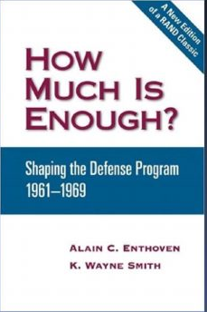
How Much Is Enough?Enthoven & Smith, 1971
The book that wrote it down
Alain Enthoven and K. Wayne Smith ran systems analysis in the Pentagon and then set out how the defense program had actually been shaped between 1961 and 1969. It is still the standard account of what analysis inside a defense ministry is for.
Robert S. McNamaraDefense Secretary, 1961–68
The man the rule is named for
McNamara arrived from Ford and insisted that every major program be considered and analyzed as a whole rather than line by line. The habit he imposed on his staff is the one this book records, and it long outlived his own record in office.
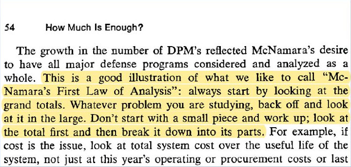
Page 54, highlighted
The rule is not in a manual or a doctrine note. It is one aside inside a paragraph about why the number of Draft Presidential Memoranda kept growing.
“Always start by looking at the grand totals. Whatever problem you are studying, back off and look at it in the large. Don’t start with a small piece and work up; look at the total first and then break it down into its parts.”
Enthoven & Smith, How Much Is Enough?, p. 54
McNamara’s First Law of Analysis
Read it as a rule about scope, not about arithmetic. The grand total is whatever the whole of your problem is, and you are not allowed to start inside it.
THE GRAND TOTAL
▼
partpartpartpart
Total first, then the parts – never a part first and upwards.
Why it is the first law for this week
A literature search is the same move. Ask what the whole body of work on your question looks like before you ask what any one paper says, because a search that starts from the paper you already know only ever returns its own neighborhood.
Where to get the data
The bibliometric databases, and what is wrong with each of them.
YOU PAY FOR THESE
Subscription-based
Scopus, Web of Science, Dimensions and scite_ are sold by subscription, and at the scale you need – whole fields, not single papers – they are (very) expensive. Whether your university buys one of them decides what your corpus can contain.
THESE ARE OPEN
Hard to access anyway
Google Scholar, Crossref, Semantic Scholar, OpenAlex, the Lens and 1findr are free to query. Retrieving in quantity is another matter: rate limits, export caps, and pagination you have to write code around.
AND THIS ONE IS GONE
And one of them simply stopped
Microsoft Academic is on this wall because it was one of the good ones, and it was switched off. Anything built on it stopped working, and a corpus assembled from it can never be refreshed.
Of disappointing quality
Many inconsistencies and omissions, even within a single database: a missing DOI, one author under three spellings, a year that disagrees with the article’s own title page. The grid is the shape of the problem, not a count of it.
Significantly overlapping
These are not independent samples of the literature. They share sources and they share each other’s metadata, so the second and third add far less than their headline counts promise. More sources is not more coverage.
And few value-added services
Surprisingly few, given the price: disambiguation you cannot trust, no full text, and little help with anything past the citation. The one you can afford is usually the one that decides your corpus – budget picks the database, the database picks the record, and the record picks the finding.
Three places to ask – and they do not agree
The same question, three free databases, three different answers.
1 · The Lens
Free, no subscription, and the only one of the three that indexes the patent record alongside the scholarly one. Everything on the previous slide was run here.
2 · Semantic Scholar
Also free, and it reads the papers rather than only indexing them – so it surfaces citation context and related work that a keyword match never reaches.
3 · OpenAlex
Fully open: the whole corpus is downloadable, which makes it the one you can query at scale yourself without asking anyone.
What the overlap means
The three share a large core – and each one holds records the other two do not. No single service is the literature. Which is why the count you are about to get depends on where you ask.
Now run your own
Your topic, three free services, and two numbers you keep.
“your topic, in one phrase”
1 · Write your topic as one phrase
Not a sentence and not a list – the words you would expect to appear together in a title. Put it in quotation marks. Without them the engine searches the words separately and the number it gives you back means nothing.
lens.org
2 · The Lens — lens.org
Free, no subscription, and it covers the scholarly and the patent record. Make an account first – you cannot save or export a search without one, and you will want to.
semanticscholar.org
3 · Semantic Scholar — semanticscholar.org
Also free. It reads the papers as well as indexing them, so it will show you citation context and related work that a plain keyword match never surfaces.
openalex.org
4 · OpenAlex — openalex.org
The fully open one: every record is downloadable, so it is the only one of the three you can query programmatically at scale without asking anyone's permission.
the exact phrase
plus your OR variants
5 · Two numbers, written down
Run the exact phrase first and note the count. Then add the variants the way we just built ours – the plurals, the adjective forms, the British spelling – and note it again. Keep both numbers. Day 3 starts from them.
The three will not agree – that is the finding
Different services index different corpora, so the same query returns three different numbers. None of them is the truth and none of them is a mistake. The gap between them is the first honest measure of how much of your own literature you have never seen.
An epistemic MRI
The deterrence literature, 1958–2020: 810 articles, 2,312 terms, 41,868 links.
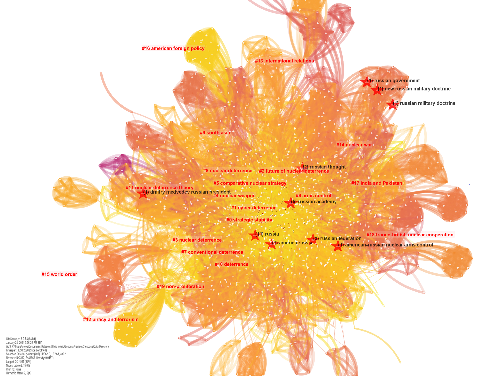
The whole field in one scan
Every dot is one of 2,312 terms, sized by how often it occurs and colored by the cluster the algorithm put it in; every thread is one of 41,868 co-occurrences between them. Twenty clusters emerged on their own – strategic stability, cyber deterrence, nuclear weapon, arms control, world order – and nobody read an article to find them.
Ten stars, and Russia is inside
The rings mark every term the map flags with a red star: russia, russian federation, russian academy, russian thought, russian government, new russia, america russia and three more. Nine of the ten sit in the dense right half of the map, among arms control and nuclear deterrence; one sits far out on the left edge on its own.
What the field got excited about, and when
The same tool reports citation bursts – terms whose use spikes for a run of years. Eleven of the fifteen are drawn here, in the order they began: cyber deterrence is the strongest at 9.0, and russia bursts from 2016 to 2020.
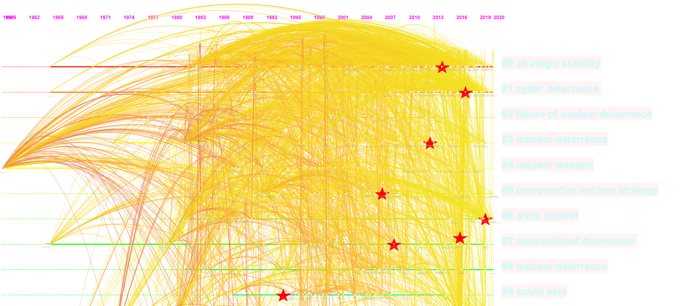
The same corpus, laid out in time
The identical network redrawn against a calendar: 1958 at the left edge, 2020 at the right, one lane per cluster. Of the nine red stars on it, seven fall after 2005 and four after 2012.
An MRI, not a bibliography
This scans a whole field’s vocabulary; it does not hand you a reading list. It tells you where your topic sits, what it is next to, when it arrived and how much of the field it actually occupies – four questions a keyword search cannot answer, because a keyword search returns only what you already knew to ask for.
Slicing and dicing – and what is missing
Cut the same corpus as many ways as you like; the cut can only show what was captured in the first place.
Slice by author
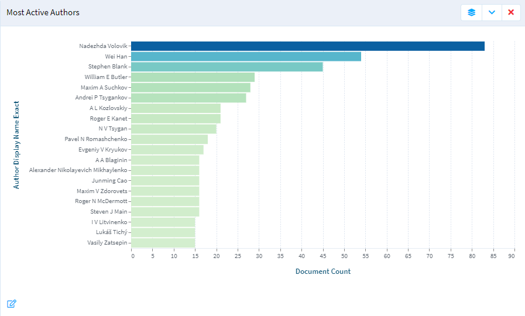
Russia
document-count axis runs to 90
The same records, re-ranked
The Lens re-sorts a finished result set by any field in it, so ranking by author costs nothing and runs no new search. On the Russian corpus that yields a real distribution: one clear leader, a shoulder of three or four names, and a tail still worth reading at position twenty.
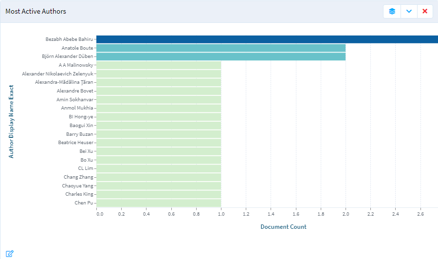
China
the same axis stops at 2.6
The identical panel, one slice over
Now the same panel on the Chinese slice. The axis gives it away before any name does: it tops out below three documents where the Russian one needed ninety. Two authors have two papers and every other name in the top twenty has one.
Slice by institution
Russia
top institution 831 · fifteenth 67
A different cut, same corpus
Re-group the identical records by institution and they come back as a wall of logos, each tagged with its output. The Russian Academy of Sciences carries 831 documents, Kirov Military Medical Academy 421, Moscow State University 230 – and the fifteenth cell still holds 67.
China
top institution 9 · last cells on 2
What a shallow pool looks like
The same grid for China puts Jilin University on top with 9, Peking University on 7, the bottom row on 2. Two of the fifteen cells are not Chinese at all – King’s College London and the University of Gondar in Ethiopia.
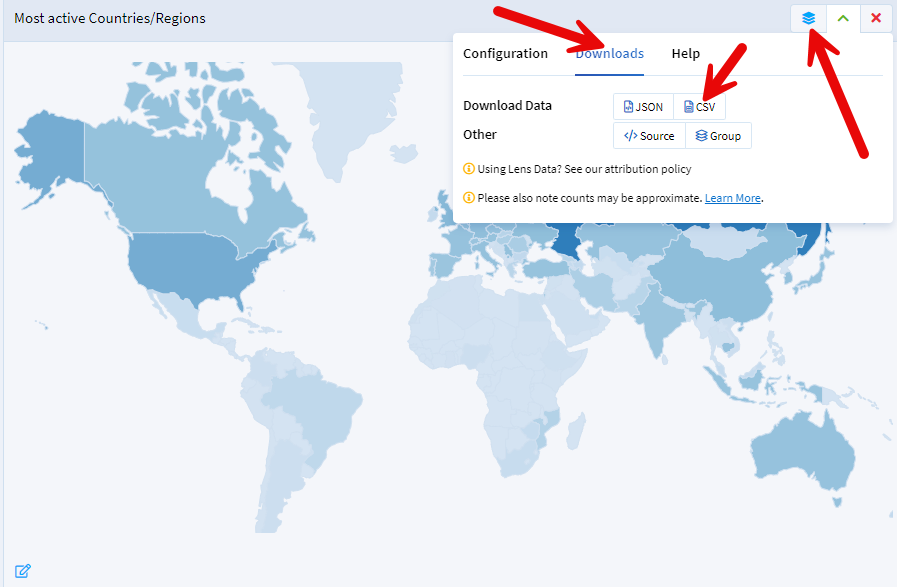
Every slice exports; none of them fixes the input
Any of these cuts comes out of the dashboard as JSON or CSV, which is what makes them so quotable as the state of a field. They are not that. This is ‘just’ The Lens, which does not have particularly expansive coverage of the Chinese scholarly record – and a cut can only ever show what the database captured.
One object, and the cuts you make in it
Today is not about filing papers · it is about how you wrap your mind around a topic
What today is actually about
Whatever you study arrives as one undifferentiated object – here, warfare. You cannot hold it in your head whole, and no single list of topics will let you. Today is about the cuts you make in it.
Cut it one way
Slice along the level of war and you get tactical, operational and strategic. Every piece of the object is in exactly one of those three, and nothing has been left out.
Cut the same object another way
Now slice by domain instead: land and sea, air and space, cyber and information. Nothing about the object changed. These are different categories of the same thing, and neither cut is more correct than the other.
And a third
Slice by technology regime – industrial, precision, autonomous. Three independent questions, three sets of answers, all of them true of the same warfare at the same time.
The cells, not the slices
Hold all three cuts at once and you get twenty-seven cells. The lit one is a strategic, cyber and information, autonomous case – a fully specified position, not a label. That cell is what a multidimensional taxonomy gives you and a single list cannot.
Wrapping your mind around a topic is the whole unit
A taxonomy is not a filing system for papers you have already read. It is the set of cuts that turns one unmanageable object into positions you can name, count, compare and search for. The rest of this morning is about deriving those cuts for your own topic rather than borrowing someone else’s – and about testing whether the cuts you got back are any good.
But real topics are not tidy cubes
The same warfare · four things a clean Cartesian product cannot say
Uneven, not 3 × 3 × 3
Dimensions do not arrive with the same number of values, and the values are not the same size. There are orders of magnitude more tactical cases than strategic ones, so the tidy cube quietly implies a balance your corpus will never have.
Correlated, so the cells shear
Autonomous systems cluster at particular levels of war. When two dimensions are correlated the cutting planes stop being perpendicular: some combinations are crowded, others barely exist, and a flat list of categories shows neither.
Curved, because the real boundary bends
Where does cyber stop and information begin? That cut is a surface, not a plane, and cases near it are graded rather than assigned. A taxonomy that pretends otherwise produces its most confident labels exactly where they are least safe.
Ragged, with a hole in it
The solid is not convex, it has a void running through it, and one whole region has nothing inside. An empty cell is a finding: either nobody has studied that combination, or it cannot exist – and which of the two it is, is a research question in its own right.
Start from the cube anyway
Three clean, perpendicular, equal axes are how you get anything at all, and a model will hand you a set in about a minute. The murderboard later this morning is where you find out which of your cuts are uneven, which are correlated, which bend, and which enclose nothing – and that is the step that turns a tidy diagram into an instrument you can actually measure with.
What are ontologies and taxonomies?
Both organize knowledge. One says what a thing is; the other says what it does.
A taxonomy classifies
It sorts concepts into a hierarchy and asserts one kind of link: is-a. A tiger is a carnivore, a carnivore is a mammal, a mammal is an animal. Everything else you know about a tiger has nowhere to live in this structure.
Like a library classification
Every book gets exactly one shelf, and the shelf is chosen by subject. Physics sits with physics. That is an excellent way to find a book when you already know which subject you want – and no help at all otherwise.
An ontology relates
It keeps the is-a backbone and adds typed relationships between concepts: rules, attributes and connections describing how elements interact. A tiger preys on deer. A tiger’s habitat is the jungle. The label on the edge is itself knowledge.
Like a knowledge graph
Now the books are linked not only by category but by content, themes and authors. A question can travel along those links instead of stopping at the shelf. That is the difference between finding a document and following an argument.
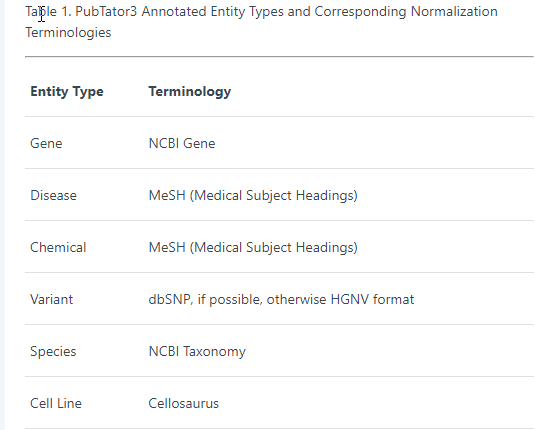
Both layers, in one live system
PubTator3 publishes exactly these two tables. The first maps entity types onto standard terminologies – that is the taxonomy. The second names twelve relation types with which any two entities can be connected – that is the ontology, and it is where the biology actually is.
Now build one for your own topic
The whole prompt, three lines you write, and two models that must not see each other.
the full prompt · one page, one copy button
1 · Get the prompt
Scan it. You get the whole framework – every phase, every criterion, the output contract – on one page with a button that copies the lot. Nothing to remember and nothing to retype.
DOMAIN
what is this a taxonomy OF, and where does it stop?
INSTANCE
the single thing you classify – an issue, an event, an argument
APPLICATION
the corpus you will actually run it over
2 · Fill in three lines for YOUR topic
The DOMAIN block at the end is the only part you write. The hard one is INSTANCE. If you name a document, a chapter or a paragraph, you will get a taxonomy of your sources’ filing system instead of your subject.
✗ no dimensions are supplied to the model
3 · Do not hand it the answer
The prompt deliberately contains no candidate dimensions. If you suggest them, the model will agree with you and you will have learned nothing about your domain. Let it derive them.
model A
blind
model B
4 · Run it twice, blind
Two models, neither seeing the other’s output. Where the two taxonomies disagree is where your domain is genuinely contestable. That disagreement is a finding, not a defect – and it is what you murderboard next.
Bring both taxonomies to tomorrow
Day 4 runs a real corpus through a real taxonomy and measures how well it worked. It works far better with yours than with mine.
The murderboard
Two models argue over frozen bytes until both sign off – or the disagreement is the finding.
You – the author – cannot be one of the two reviewers – that GO is a self-assessment, and no checker can tell the difference. Naming the arrangement is the requirement.
Now measure whether it worked
Three checks, in increasing order of discomfort.
Does the quoted span exist?
Make the model quote the text justifying each call, then check mechanically that the quote is really there.
Do two models agree?
One model is an opinion. Disagreement is where your scheme is ambiguous.
Do two humans agree?
Cohen's kappa. This is the number your committee will ask for.
What your instrument cannot see
The most transferable idea of the week.
A real filter, from Red Lines
A statement enters this Red Lines set only if it carries both a boundary span and a threatened-consequence span. The lens where the two circles overlap is the whole of what the instrument admits.
The consequence
Deliberately deniable coercion is invisible by construction: the threat is implied, never stated, so the second span is missing. Two documents sit in the corpus and produced zero hits.
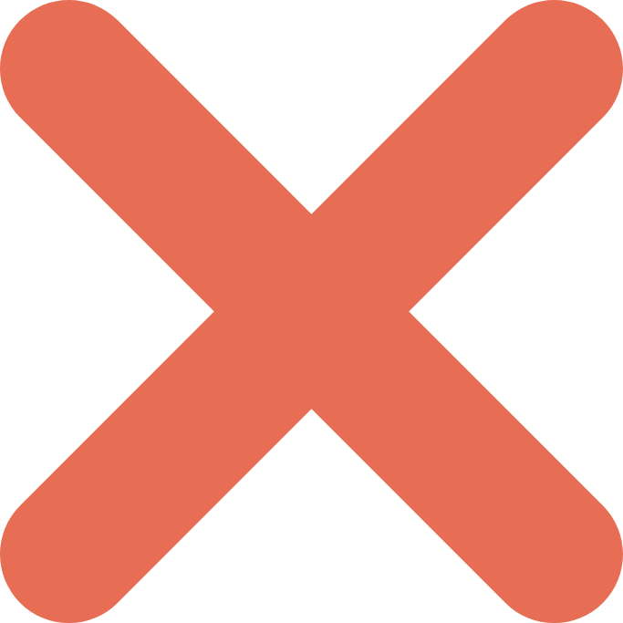
The rejections were correct
Nothing malfunctioned. The coding scheme did exactly what it was written to do, and what it was written to do excluded these. An instrument only sees what its definition admits – so write down, today, what yours is built to miss.
Four things to take out of this room
None of them needs our infrastructure, and all four survive the next change of tools
1
Ask what your query could not have returned. Precision you can see by reading your own hits. Recall you cannot see at all – and it is the number that decides whether a finding is real or an artifact of your search string.
2
Ask three sources, not one. The same question put to three free databases returns three different literatures. Where they disagree is information, not noise.
3
Write the instrument down before you use it. A scheme you can hand to someone else is the difference between a finding and an impression, and it is what makes disagreement productive instead of personal.
4
Report the number that embarrasses you. Agreement corrected for chance, the cases the scheme could not hold, the cell with nothing in it. That paragraph is what makes the rest of the paper believable.
rubase.org · login GT-RuBase · access through 6 December · the workshop runs 11:00–13:30 daily in the Nunn Conference Room, lunch provided